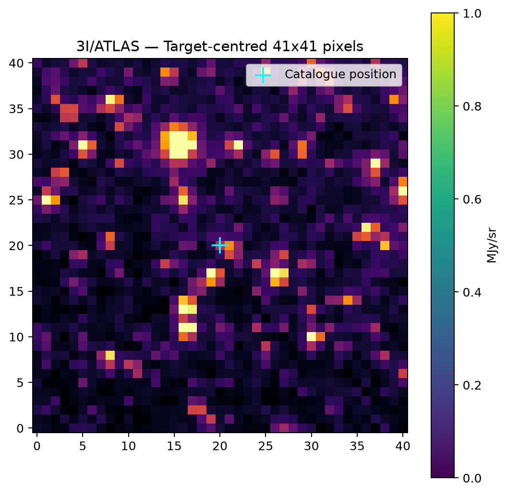

Detector D3 Case Studies
Multi-Epoch Target Analysis
Rigorous comparison of the two focal SPHEREx Level 2 observations of 3I/ATLAS in Band 3 (1.63 – 2.44 µm). Notice the striking contrast in spatial centroid alignment and quality flags between August and December.
August 2025 Epoch
Detector D3
2025W31_2A_0156_1

December 2025 Epoch
Detector D3
2025W50_2A_0741_1

Wide-Field Astronomical Context (August 2025)
The SPHEREx telescope employs a 20 cm all-aluminum telescope with wide 3.5° × 11.3° fields of view. The preview below illustrates the wider sky context surrounding the August 3I/ATLAS ephemeris pointing, demonstrating the high density of stellar background sources in near-infrared surveys.